THE ZOO GANG, The Counterfeit Trap
Researched
and compiled by Paul Stroud
All locations in Nice unless otherwise stated
Please help find the Missing Locations for this episode
All locations in Nice unless otherwise stated
Please help find the Missing Locations for this episode
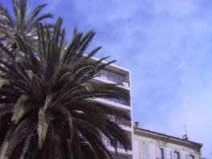
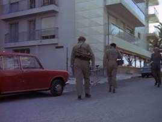
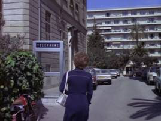
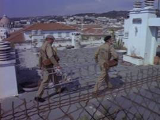
4:12
Koudou, Promenade des Anglais
Steve and Alec make their way to the roof of the hotel.
Promenade des Anglais
Manouche walks past the Villa Prat and towards the car park where she makes a phone call and then plants a bomb
This whole sequence is filmed at this car park and on the hotel roof.
Koudou, Promenade des Anglais
Steve and Alec make their way to the roof of the hotel.
Promenade des Anglais
Manouche walks past the Villa Prat and towards the car park where she makes a phone call and then plants a bomb
This whole sequence is filmed at this car park and on the hotel roof.
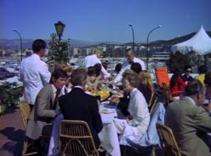
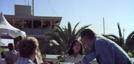
9:22
Quai Numero 1, Port Pierre Canto, Cannes
Charles Gautier throws a birthday party for his wife, Brigitte
Later, saying good-bye to Brigitte
Adjacent building best seen from north
Quai Numero 1, Port Pierre Canto, Cannes
Charles Gautier throws a birthday party for his wife, Brigitte
Later, saying good-bye to Brigitte
Adjacent building best seen from north
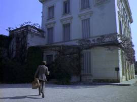
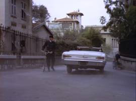
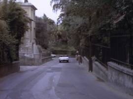
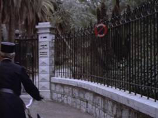
18:59
Avenue Fabron
Alec drives away from the house, while a gendarme recognises the vehicle involved in the shooting of a policeman.
Avenue Fabron
Alec drives away from the house, while a gendarme recognises the vehicle involved in the shooting of a policeman.
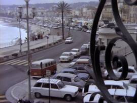
19:21
Quai des États Unis
Steve and Tommy begin their journey to collect Alec who has to dump the car he is driving.
Quai des États Unis
Steve and Tommy begin their journey to collect Alec who has to dump the car he is driving.
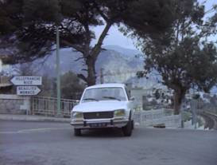
19:36
Avenue Jean Monet, Saint-Jean-Cap-Ferrat
Steve and Tommy approach a junction from Avenue Jean Monnet on the way to Alec.
Avenue Jean Monet, Saint-Jean-Cap-Ferrat
Steve and Tommy approach a junction from Avenue Jean Monnet on the way to Alec.
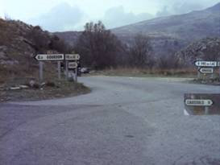
19:45
Junction at Gourdon
Steve and Tommy give way to police cars at a junction.
Located mainly by the road signs. The area has been developed, now the site of a few restaurants.
Junction at Gourdon
Steve and Tommy give way to police cars at a junction.
Located mainly by the road signs. The area has been developed, now the site of a few restaurants.
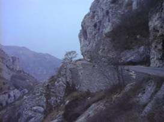
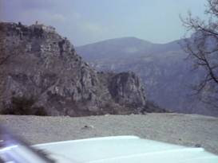
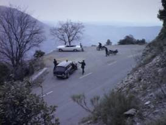
20:07
Route de Caussols, Gourdon
Alec is caught by the police as he tries to dump Carlo and Nico’s car with their bodies in the boot.
Route de Caussols, Gourdon
Alec is caught by the police as he tries to dump Carlo and Nico’s car with their bodies in the boot.
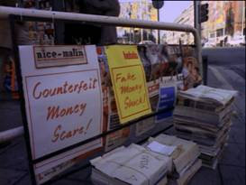
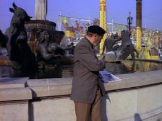
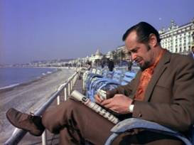
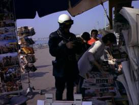
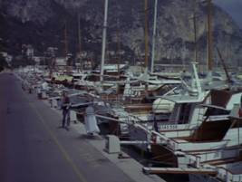
28:33
Port de Plaisance, Beaulieu-sur-Mer
Raoul realises the payment for the gold was with counterfeit notes, and runs to the boat to tell Sabot.
Port de Plaisance, Beaulieu-sur-Mer
Raoul realises the payment for the gold was with counterfeit notes, and runs to the boat to tell Sabot.
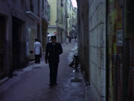
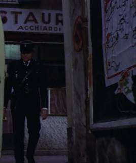
29:40
38, Rue Droite
Steve, dressed as a Gendarme, intimidates Duchet at his restaurant.
Duchet’s car is parked in Rue Place Vieille
Restaurant Acchiardo is still at the same site
38, Rue Droite
Steve, dressed as a Gendarme, intimidates Duchet at his restaurant.
Duchet’s car is parked in Rue Place Vieille
Restaurant Acchiardo is still at the same site
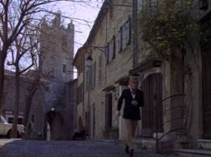
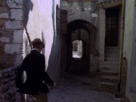
33:34
Place Grimaldi, Cagnes-sur-Mer
Tommy returns home to find his home has been trashed.
This is better at establishing 6:58 in Mindless Murder.
Place Grimaldi, Cagnes-sur-Mer
Tommy returns home to find his home has been trashed.
This is better at establishing 6:58 in Mindless Murder.
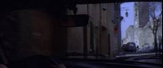
36:52
Rue du Piolet, Cagnes-sur-Mer
Manouche drives through the streets of Cagnes to the Place du Château to meet Tommy who is already at Steve’s place.
Rue du Piolet, Cagnes-sur-Mer
Manouche drives through the streets of Cagnes to the Place du Château to meet Tommy who is already at Steve’s place.
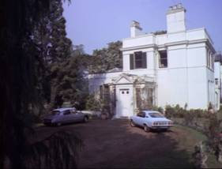
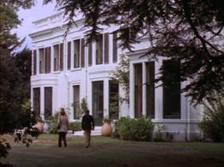
41:07
F2: East Burnham House, Thompkins Lane, Burnham (destroyed by fire in 1977) - Identified by Geoff Dodd, July 2021
Manouche and Tommy visit Charles Gautier at his new house
F2: East Burnham House, Thompkins Lane, Burnham (destroyed by fire in 1977) - Identified by Geoff Dodd, July 2021
Manouche and Tommy visit Charles Gautier at his new house
Missing Locations
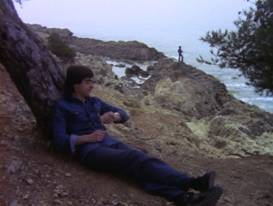
2:35
Raoul swims to shore from Sabot’s yacht, and hands the stolen gold to the waiting Carlo and Nico.
Raoul swims to shore from Sabot’s yacht, and hands the stolen gold to the waiting Carlo and Nico.
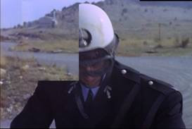
11:45
After Carlo and Nico are waved through the scene of an accident, a policeman notices the loose licence plate.
After Carlo and Nico are waved through the scene of an accident, a policeman notices the loose licence plate.
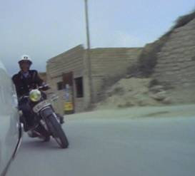
12:05
The policeman follows Carlo and Nico around a road by a working quarry.
The policeman follows Carlo and Nico around a road by a working quarry.
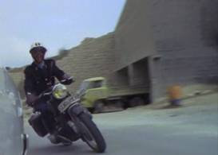
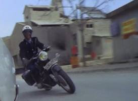
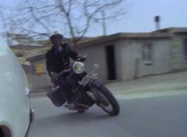
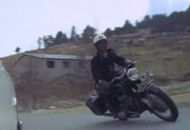
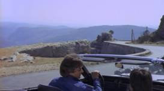
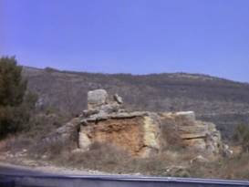
12:27
Carlo and Nico stop the car and shoot the policeman.
Carlo and Nico stop the car and shoot the policeman.
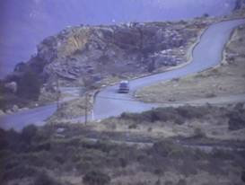
19:10
Police vehicles in the area give chase
Police vehicles in the area give chase
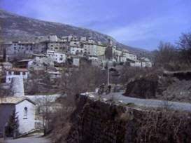
19:17
Two motorcycle policemen emerge from a hillside village.
Two motorcycle policemen emerge from a hillside village.
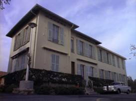
25:03
The home of Charles and Brigitte Gautier's “villa in Nice”
The home of Charles and Brigitte Gautier's “villa in Nice”
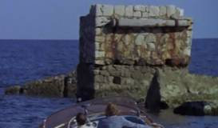
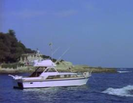
36:10
Steve is taken to Sabot’s yacht off the Côte d’Azur
Steve is taken to Sabot’s yacht off the Côte d’Azur
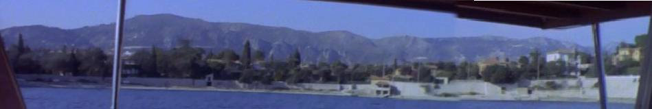